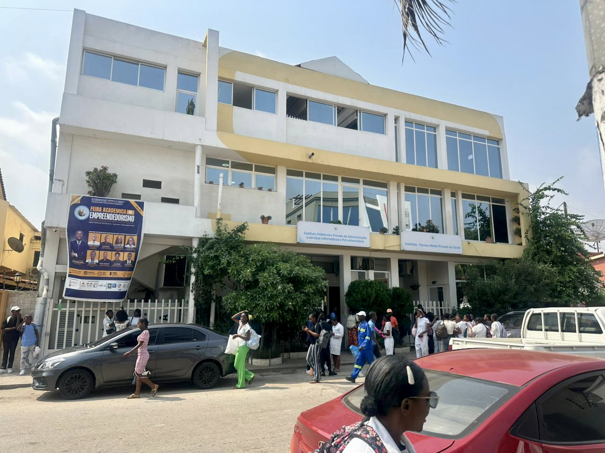

Fundado em 1996 em homenagem à memória de uma mulher que marcou a vida de quem a conheceu, o IMPSAN nasceu do amor, da gratidão e do compromisso com o futuro de Angola.
Este instituto foi criado pela actual Presidente do Conselho de Administração como uma homenagem perpétua à sua falecida mãe, Noemia dos Santos — uma mulher de fé, generosidade e amor incondicional. O nome da instituição é o seu legado vivo: cada estudante que aqui passa honra a memória de quem inspirou tudo isto.
O Instituto Médio Politécnico Santa Ana e Noesa foi fundado em 1996 pela actual Presidente do Conselho de Administração, movida pelo desejo de perpetuar a memória da sua mãe, Santa Ana e Noesa, através da educação — o bem mais transformador que se pode oferecer a uma criança, a uma família e a um povo.
"O nome desta instituição não é apenas um título. É uma promessa de nunca esquecer quem nos deu a vida e os valores que nos tornaram quem somos."
Presidente do Conselho de Administração — IMPSANDesde a sua fundação, o instituto cresceu de forma sólida e consistente, tornando-se uma referência no ensino médio técnico em Luanda. A visão da sua fundadora sempre foi clara: criar um espaço onde a qualidade académica e os valores humanos caminhassem lado a lado.
Ao longo de quase três décadas de existência, o IMPSAN formou milhares de técnicos que hoje contribuem activamente para o desenvolvimento de Angola nas áreas da saúde, da gestão empresarial e da tecnologia.

Os momentos que definiram o percurso do Instituto Médio Politécnico Santa Ana e Noesa desde a sua fundação.
O IMPSAN abre as suas portas em Luanda, fundado pela actual PCA em homenagem à sua mãe, Santa Ana e Noesa. O instituto inicia a sua actividade com o curso de Contabilidade e Gestão.
Face à crescente necessidade de profissionais de saúde em Angola, o instituto lança o curso de Enfermagem e Análises Clínicas, ampliando a sua oferta formativa.
O instituto celebra 10 anos de actividade com a primeira grande reforma das instalações e a criação de novos laboratórios de ciências da saúde, respondendo ao aumento do número de estudantes.
Em resposta à revolução digital que transformava a economia angolana, o IMPSAN lança o curso de Informática, dotando os laboratórios de tecnologia com equipamento moderno e ligação à internet.
Implementação de novos métodos de ensino baseados em projectos e simulação real. Os laboratórios são reequipados e o instituto adopta um modelo pedagógico centrado na prática profissional.
Grande investimento na modernização de todos os laboratórios, com aquisição de equipamento de última geração, instalação de fibra óptica e criação do laboratório de simulação clínica.
O IMPSAN olha para o futuro com uma nova geração de líderes formados sob os valores da sua fundadora, reafirmando o compromisso com a excelência académica e o desenvolvimento de Angola.
Os pilares que guiam cada decisão, cada aula e cada estudante que passa pelas portas do IMPSAN.
Proporcionar uma educação técnica e científica de excelência, formando profissionais competentes, éticos e comprometidos com o desenvolvimento socioeconómico de Angola e do continente africano, honrando o legado de quem nos inspirou.
Ser reconhecido como o instituto de referência em ensino médio técnico em Angola, distinguindo-se pela inovação pedagógica, pela qualidade dos seus diplomados e pelo impacto positivo que estes têm na transformação do país.
Excelência académica, integridade, memória e gratidão, responsabilidade social, espírito colaborativo, respeito pela diversidade angolana e compromisso permanente com o desenvolvimento dos nossos estudantes e das suas famílias.
A mulher que transformou a dor da perda em propósito, e o propósito numa instituição que hoje muda vidas em Angola.

Fundadora e líder do IMPSAN desde 1996. Dedicou a sua vida a transformar a memória da sua mãe num legado de educação e esperança para Angola.
A fundação do Instituto Médio Politécnico Santa Ana e Noesa nasceu de um acto profundamente humano: a necessidade de honrar quem amamos depois de os perdermos. A actual Presidente do Conselho de Administração perdeu a sua mãe, Santa Ana e Noesa, e escolheu transformar essa perda numa forma de serviço permanente à comunidade angolana.
Ao criar esta instituição em 1996, ela não estava apenas a abrir uma escola — estava a escrever uma carta para o futuro, assinada com o nome da mulher que lhe ensinou o valor da educação, da dignidade e do amor ao próximo.
Sob a sua liderança, o IMPSAN cresceu de forma sustentada ao longo de quase três décadas, mantendo sempre o espírito que o fundou: a crença de que a educação é o caminho mais seguro para a liberdade e para a prosperidade de um povo.
Cada estudante que entra neste instituto é, para mim, uma continuação do legado da minha mãe. Ela não chegou a ver esta escola, mas vive em cada diplomado que sai daqui pronto para servir Angola.
Presidente do Conselho de Administração — IMPSANInscreva-se no instituto que nasceu do amor e que todos os dias trabalha para transformar o futuro dos jovens angolanos.